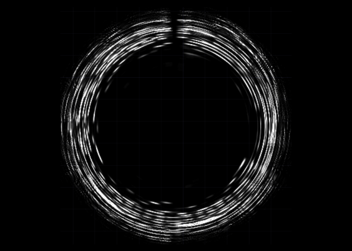

SONIC
STYLES
#Revelation
#Perception
“Seeing Sonic Styles” focuses on developing comparative visuals that show the playing styles of classical music pianists. This research examines and compares duo performances of Chopin Ballade No. 1 to identify the playing styles of the pianists. Chopin Ballade No.1 is a classical music piece composed by Chopin and is one of the most popular pieces by him. The intention is to bring a comparative aspect into music visualization. By analyzing the differences between piano play styles, it will benefit the audience to identified various interpretations among pianist and raise the question:
What’s the standard / correct interpretation of this piece?
This study will retrieve pianists’ live recordings using music information retrieval, which is then analyzed as a sound spectrum. The comparative visualization formed to describe the inner and external differences between pianists using sound data.
The intended audience for this piece is music students and professionals since this analysis of comparative performances will help them to recognize the various approaches taken by famous pianists to the same piece.


These visualizations were created using TouchDesigner. The same audio file is used as the input, and the same FFT method is used to analyze the sound. When the audio is being played in parallel, each sound fragment is plotted to rotate. The keyboard's outer circles are the lower portions of the keyboards, while the inner circles indicate the higher frequency and higher notes on the keyboard. The whiteness of the hue represents intensity; a stronger whiteness in color indicates a more powerful attack on the keyboard. When comparing this to librosa's earlier research, the general analysis is the same but presented in a different format. In this distinct style, the material has been condensed and the focus is clearer due to the use of white visuals against a black background, which also makes for a more succinct illustration idea. For its dynamic and lively visual formats, it is a more appealing format for viewers to easily perceive how the sound is evolving, it also enables audiences who have no prior experience with music to experience the music. The animation also will create an atmosphere to narrate emotions.

The final design prototype for this study incorporates a more complete pianists’ performance to raise the question:
Is there a standard interpretation on a music piece?
It is apparent that piano pieces composed and performed over a century ago did not sound the same as with these modern pianists for reasons of factors like piano type and structure explained in the previous piano section.
Here shown in the figure is the static version of the comparative animated visualization. Each circle is drawn in the same time span and the size and color refers to the amplitude and timbre at that specific time. The timbre or the brightness of sound is calculated by finding the centroid of frequency as the weighted mean of the frequencies present in the signal, determined using a Fourier transform, with their magnitudes as the weights.